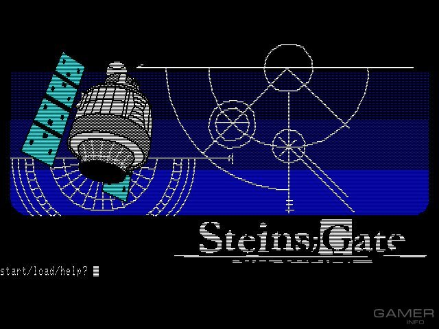
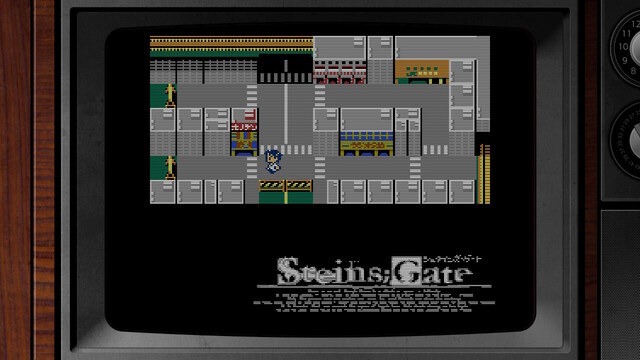

Games
Steins;Gate (visual novel):
Steins;Gate is a Japanese visual novel developed by 5pb. and
Nitroplus and released on October 15, 2009
for Xbox 360. It is the second collaboration between the two companies, after Chaos;Head. A version
for the Windows operating system was released on August 26, 2010, and for the PlayStation Portable
on June 23, 2011.
Steins;Gate: Hiyoku Renri no Darling:
Steins;Gate spin-off visual novel that came out for PC, was published
on June 16, 2011 after the original
novel and has since been
the subject of several ports to other platforms focused on the comedy and
romance of the characters rather than the suspense and drama involved time travel.
Steins;Gate: Hen'i Kuukan no Octet
Steins;Gate: Hen'i Kuukan no Octet is a text adventure-styled visual
novel that was released on October
28, 2011 for Windows PC.
The game's retro design mimics that of various text adventure games
released
during the 8-bit PC era. The story takes place after
the true ending of the Steins;Gate visual
novel.

Steins;Gate: Senkei Kousoku no Phenogram
Steins;Gate: Senkei Kousoku no Phenogram is a visual novel that was
originally released for PlayStation
3, Xbox 360,
and PlayStation Vita in 2013, and was later ported to iOS, Nintendo Switch,
PlayStation 4,
and PC (Windows). The PlayStation 4 and
PC versions were released internationally by Spike Chunsoft
in
2019.
The novel is part of the Science Adventure Series and is a
spin-off of Steins;Gate. It consists of
ten
non-canonical side stories set on different world lines, following different characters from the
franchise.
Unlike previous visual novels, this one has virtually no interactivity.
Steins;Gate 0
The sequel titled Steins;Gate 0 was released on December 10, 2015 for
PS3, PS4, and PS Vita, and
received its anime adaptation in 2018.
Steins;Gate Elite
Steins;Gate Elite is a visual novel that trades in the static images
of the original Steins;Gate, which
turns a decade this year, for the
animation of the series that aired in 2011. It was released in
2019
for PS4, PS Vita, Nintendo Switch and Windows in 2019
8-bit ADV Steins;Gate
It is a retro adventure game in the style of classic Famicom/NES
games of the 1980s, with downmixed
chiptune versions of the
music from the original Steins;Gate and the same characters, but a
different
plot, taking place on different worldlines. It was
developed by 5pb. Games, and was released in
September 2018 for Nintendo Switch.
